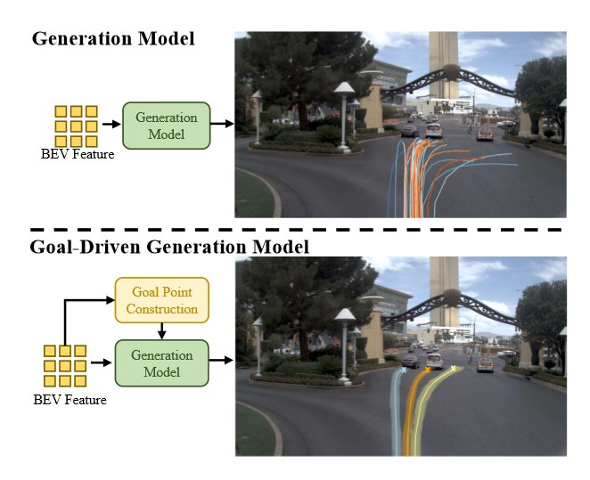
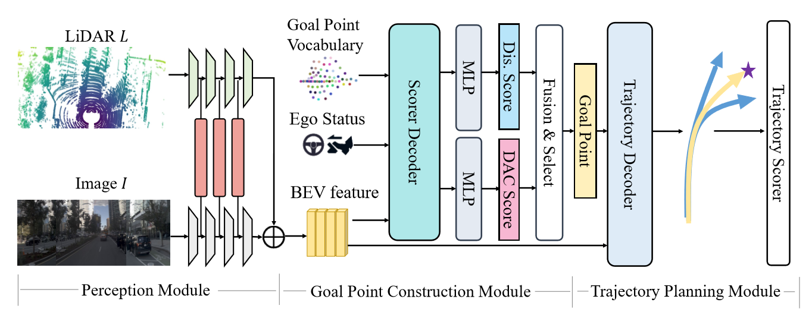
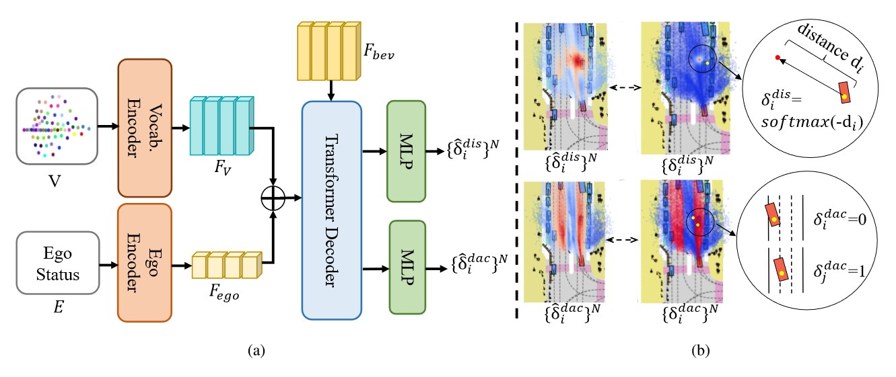
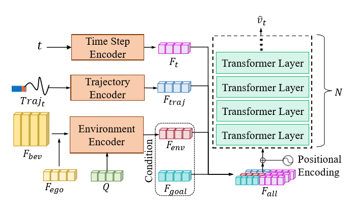
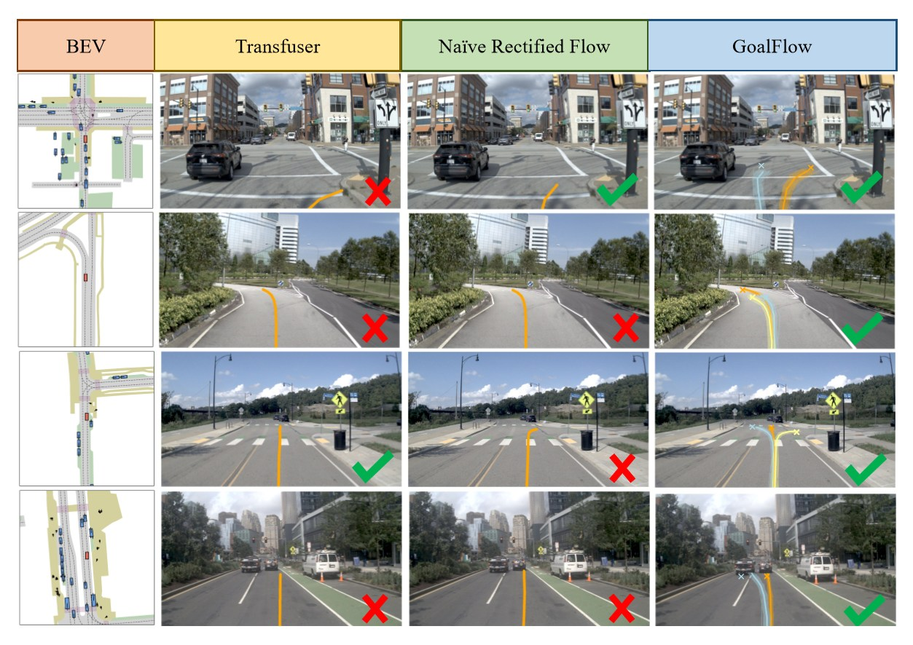
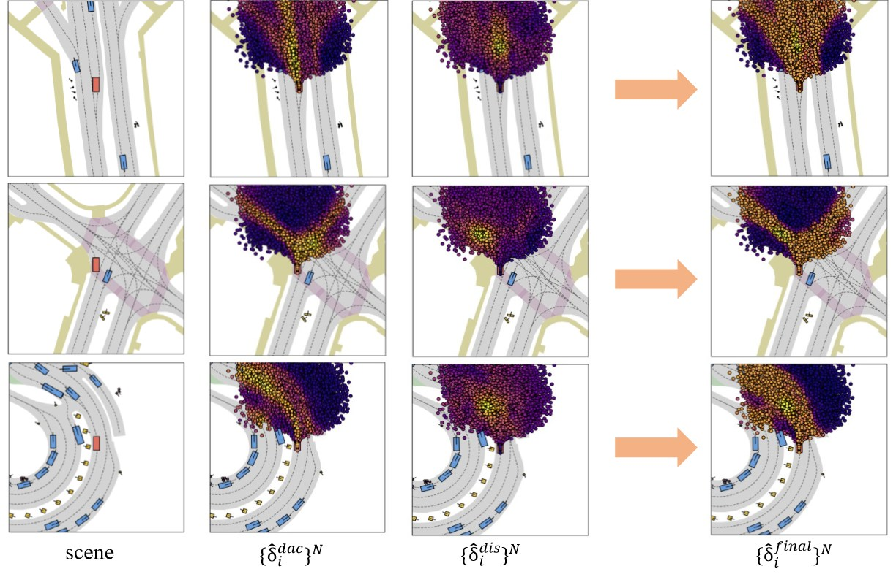
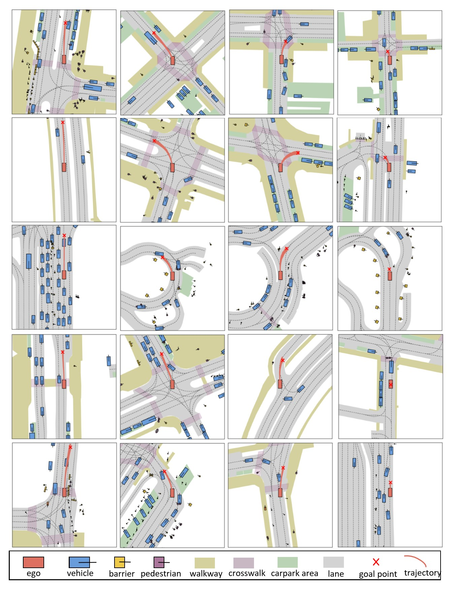

Zebin Xing1,2*、Xingyu Zhang2*、Yang Hu2、Bo Jiang4,2、Tong He5、Qian Zhang2、Xiaoxiao Long3、Wei Yin2†
1School of Artificial Intelligence, University of Chinese Academy of Sciences 2Horizon Robotics 3Nanjing University 4Huazhong University of Science & Technology 5Shanghai AI Laboratory
arXiv:2503.05689v6 [cs.CV]、2025年10月1日
翻訳について：原文 PDF は
34_GoalFlow_2503.05689.pdf（全 12 ページ）。本文、図の説明、図中ラベル、表、脚注、付録を訳出し、論文タイトルと参考文献は原文のまま掲載。図は原図を掲載し、英語ラベルの日本語訳を併記した。数式・数値・引用番号・コードの識別子は原文を維持。原文の記述に関する補足は「訳注」と明示し、本文と区別している。
脚注*：同等の貢献。
脚注†：責任著者、プロジェクトリーダー。Email: yvanwy@outlook.com
本論文では、高品質なマルチモーダル軌道を生成するエンドツーエンド自動運転手法 GoalFlow を提案する。自動運転のシナリオにおいて、適切な軌道がただ 1 本に定まることはまれである。近年の手法は、マルチモーダルな軌道分布のモデル化にますます注力している。しかしそれらの手法は、軌道の発散が大きいことや、ガイダンスとシーン情報との不整合により、軌道選択の複雑化と軌道品質の低下に悩まされている。これらの問題に対処するため、生成過程を効果的に制約して高品質なマルチモーダル軌道を生成する新しい手法 GoalFlow を導入する。拡散ベースの手法に固有の軌道発散の問題を解決するため、GoalFlow はゴール点を導入して生成される軌道を制約する。GoalFlow は、シーン情報に基づいて候補点の中から最も適切なゴール点を選択する新しいスコアリング機構を確立する。さらに GoalFlow は、効率的な生成手法であるフローマッチング（Flow Matching）を用いてマルチモーダル軌道を生成し、改良したスコアリング機構を組み込んで候補の中から最適な軌道を選択する。Navsim［7］で検証した実験結果は、GoalFlow が最先端の性能を達成し、自動運転のための頑健なマルチモーダル軌道を提供することを示している。GoalFlow は PDMS 90.3 を達成し、他の手法を大きく上回った。他の拡散ポリシー（diffusion policy）ベースの手法と比較して、本手法はただ 1 回のデノイズステップで優れた性能を得られる。コードは https://github.com/YvanYin/GoalFlow で公開している。

図1：近年の異なるマルチモーダル軌道生成パラダイムの比較。単独の生成モデルは、異なるモード間に明確な境界のない、非常に多様な軌道を生成しがちである。これに対しゴール駆動型生成モデルは、ゴール点の強いガイダンスを活用し、異なるゴール点を用いることで複数のモードを効果的に区別する。
図中ラベル：Generation Model＝生成モデル、Goal-Driven Generation Model＝ゴール駆動型生成モデル、BEV Feature＝BEV 特徴、Goal Point Construction＝ゴール点構築
UniAD［15］以来、自動運転ではエンドツーエンドシステムがますます好まれるようになっており、そこではマッピングや検出といったタスクは最終的にプランニングタスクに奉仕する。システムの信頼性を高めるため、一部のエンドツーエンドアルゴリズム［16, 17, 27］は、アルゴリズムの軌道候補としてマルチモーダル軌道を生成する方法の探求を始めている。自動運転においてコマンドは通常、左折・右折・直進の各行動を示す指示子を含む。VAD［17］はこのコマンド情報を用いてマルチモーダル軌道を生成する。今後数秒間の車両の位置情報を与えるゴール点は、SparseDrive［27］など他の手法でガイド情報としてよく用いられる。これらの手法はゴール点の集合をあらかじめ定義し、異なる軌道モードを生成する。どちらのアプローチも自動運転で成功を収めており、衝突率を大幅に低減する候補軌道を提供している。しかし、これらの手法のガイド情報は正確さを追求するものではなく、軌道に対する候補値の集合を与えるものであるため、ガイド情報と正解との差が大きい場合には低品質な軌道を生成しやすい。
近年の軌道予測の研究では、一部の手法［18, 28, 32］が拡散によってマルチモーダル軌道を生成することを目指しており、シーン情報や運動情報を条件としてマルチモーダル軌道を生成する。他の手法［12］は拡散を利用して世界モデルを構築する。制約がない場合、Diffusion-ES［32］のような手法は図1の 2 行目に示すように発散した軌道を生成する傾向があり、実世界の道路網に整合させるために HD マップに基づくスコアリング機構を必要とするが、HD マップはエンドツーエンド環境では入手が難しい。MotionDiffuser［18］は正解の終点を制約として用いることで軌道の発散に対処しているが、これは過度に強い事前情報を導入することになる。GoalGAN［8］はまずゴール点を予測し、次にそれを用いて GAN ネットワークを誘導して軌道を生成する。しかし GoalGAN はグリッドセルを用いてゴール点をサンプリングしており、ゴール点の分布を考慮していない。
先行研究を振り返り、我々は見過ごされてきたいくつかの問題を特定した。(1) 既存のエンドツーエンド自動運転システムは衝突と L2 の指標に重点を置きがちで、衝突を減らすために特定の損失を追加したり後処理を適用したりすることが多い一方、車両が走行可能領域内にとどまるかどうかを見落としている。(2) ほとんどのエンドツーエンド手法は回帰モデルに基づいており、異なるガイド情報を用いることでマルチモダリティを実現しようとする。しかしガイド情報が正解から大きく外れると、低品質な軌道の生成につながりうる。
GoalFlow は 3 つの部分、すなわち知覚モジュール、ゴール点構築モジュール、軌道プランニングモジュールに分けられる。第 1 のモジュールでは、Transfuser［3］に倣い、画像と LiDAR を 2 つの別々のバックボーンに入力し、最終的に BEV 特徴に融合する。第 2 のモジュールでは、GoalFlow はゴール点の密な語彙（vocabulary）を構築し、新しいスコアリング機構を用いて、正解のゴール点に最も近く、かつ走行可能領域内にある最適なゴール点を選択する。第 3 のモジュールでは、GoalFlow はフローマッチングを用いてマルチモーダル軌道を効率的にモデル化する。シーン情報を条件とし、選択したゴール点によるより強いガイダンスを組み込む。最後に、GoalFlow はスコアリング機構を用いて最適な軌道を選択する。図1の 1 行目のように拡散で軌道を直接生成するのと比べ、本手法は軌道に強い制約を与え、より信頼性の高い結果をもたらす。
我々は Navsim で実験的検証を行い、本手法が総合スコアで他の手法を上回ることを確認した。特に、ゴール点選択機構により DAC スコアで大幅な改善を達成した。さらに、このフローマッチングベースの手法は推論時のデノイズステップ数に対して頑健であることを確認した。デノイズステップがわずか 1 回でも、スコアは最良の場合と比べて 1.6% しか低下せず、自動運転における生成モデルの実世界展開の可能性を高めている。
本論文の貢献は次のようにまとめられる。
初期のエンドツーエンド自動運転手法［5］［4］は模倣学習の手法を用い、入力画像から直接特徴を抽出して軌道を生成していた。その後 Transfuser［3］は、知覚の際に LiDAR と画像の情報を融合し、マッピングや検出などの補助タスクを用いて知覚に教師信号を与えることで前進した。FusionAD［33］は Transfuser をさらに一歩進め、融合した知覚特徴を予測モジュールとプランニングモジュールに直接伝播させた。他の手法［19, 20］は交通シーンを自然言語と整合させる。UniAD［15］は統一的なクエリ設計を導入し、フレームワークを最終的にプランニング指向のものとした。同様に VAD［17］は、知覚タスクを簡略化しシーン表現をベクトル化形式に変換することでプランニング指向のアプローチに注力し、プランニング能力と効率の両方を大幅に高めた。これを基に、一部の手法［1, 22］は軌道空間を離散化して軌道語彙を構築し、回帰タスクを分類タスクに変換した。PARA-Drive［30］はマッピング、プランニング、動き予測、占有予測のタスクを並列に実行する。GenAD［35］は時間的な軌道再構成に VAE と GRU を用い、SparseDrive［27］はベクトル化シーン表現をさらに推し進め、より密な BEV 表現を省いた。回帰モデルを用いて正解軌道によりよく適合させることに注力する従来手法と比べ、我々はエンドツーエンドの設定において高品質なマルチモーダル軌道を生成することに集中する。
初期の生成モデルは、画像生成において常に VAE［21］と GAN［10］を用いていた。近年では、ノイズの付加と除去を反復して画像を生成する拡散モデルが主流となっている。DDPM［14］は学習時に画像へノイズを加えて時間ステップにわたって状態を変換し、その後テスト時にデノイズして画像を再構成する。より最近の手法［26］はサンプリング効率をさらに最適化している。また CFG［13］は生成出力の頑健性を高めた。フローマッチング（Flow Matching）［23］は、ある分布から別の分布へ遷移するためのベクトル場を確立する。フローマッチングの特定の形式である Rectified flow［24］は、分布間の直接的で線形な遷移経路を可能にする。拡散モデルと比較して、Rectified flow は良好な結果を得るのに 1 回の推論ステップしか必要としないことが多い。

図2：GoalFlow のアーキテクチャの概要。GoalFlow は 3 つのモジュールから成る。知覚モジュールはシーン情報を BEV 特徴 \(F_{bev}\) に統合する役割を担い、ゴール点構築モジュールはゴール点語彙 \(\mathbb{V}\) から最適なゴール点をガイド情報として選択し、軌道プランニングモジュールはガウス分布から目標分布へとデノイズすることで軌道を生成する。最後に、軌道スコアラー（Trajectory Scorer）が候補の中から最適な軌道を選択する。
図中ラベル：Goal Point Vocabulary＝ゴール点語彙、Ego Status＝自車状態、BEV feature＝BEV 特徴、Scorer Decoder＝スコアラーデコーダ、Dis. Score＝距離スコア、DAC Score＝DAC スコア（走行可能領域遵守スコア）、Fusion & Select＝融合と選択、Goal Point＝ゴール点、Trajectory Decoder＝軌道デコーダ、Trajectory Scorer＝軌道スコアラー、Perception Module＝知覚モジュール、Goal Point Construction Module＝ゴール点構築モジュール、Trajectory Planning Module＝軌道プランニングモジュール
マニピュレーションや自動運転などのプランニングタスクでは、ある状況に対して複数の行動の選択肢が存在することが多く、効果的なマルチモーダルモデリングが必要となる。マニピュレーションにおける最近の研究［2, 31］は、拡散モデルを適用することでこれを探求し、顕著な成功を収めている。自動運転では主に 2 つのマルチモーダル戦略が採用されてきた。第 1 は離散的なコマンドを用いて軌道生成を誘導するもので、3 つの異なる軌道モードを生成する VAD［17］や、データセットから固定のナビゲーション点をクラスタリングして軌道のガイダンスとする SparseDrive［27］および［16］がこれにあたる。第 2 のアプローチは拡散モデルを直接導入してマルチモーダル軌道を生成するもの［18, 29, 32］であり、軌道予測では成功を収めているが、エンドツーエンドの応用では課題に直面している。我々は拡散モデルを基盤としつつ、フローマッチングを取り入れることで精度と効率の限界に対処し、マルチモーダルな多様性のみに注力するのではなく、ゴール点を用いて軌道を正確に誘導する。
時間とともに徐々にノイズを加える過程を逆転させてデータを復元することの学習に注力する拡散とは異なり、フローマッチング［23］はデータ分布間を写像する可逆変換の学習に注力する。\(\pi_0\) を単純な分布、典型的には標準正規分布 \(p(x) = \mathcal{N}(x|0, I)\) とし、\(\pi_1\) を目標分布とする。この枠組みのもとで、Rectified flow［24］は最適輸送（optimal transport）［25］の変位によって経路を構築する単純かつ効果的な方法を用いており、我々はこれをフローマッチングの手法として採用する。
\(\pi_0\) からサンプリングした \(x_0\)、\(\pi_1\) からサンプリングした \(x_1\)、および \(t \in [0, 1]\) が与えられたとき、\(x_0\) から \(x_1\) への経路は直線として定義される。すなわち中間状態 \(x_t\) は \((1-t)x_0 + tx_1\) で与えられ、中間状態の方向は常に \(x_1 - x_0\) に従う。現在の状態 \(x_t\) と時間ステップ \(t\) に基づいて方向 \(x_1 - x_0\) を予測するニューラルネットワーク \(v_\theta\) を構築し、\(v_\theta(x_t, t)\) と \(x_1 - x_0\) の間の損失を最適化することで、初期分布 \(\pi_0\) から目標分布 \(\pi_1\) への経路を得ることができる。これは次のように定式化できる。
\[ v_\theta(x_t, t) \approx \mathbf{E}_{x_0 \sim \pi_0, x_1 \sim \pi_1}[v_t | x_t] \tag{1} \]
\[ \mathcal{L}(\theta) = \mathbf{E}_{x_0 \sim \pi_0, x_1 \sim \pi_1}[\| v_\theta(x_t, t) - (x_1 - x_0) \|_2] \tag{2} \]
GoalFlow は、高品質なマルチモーダル軌道を生成できるゴール駆動型のエンドツーエンド自動運転手法である。GoalFlow の全体アーキテクチャを図2に示す。これは 3 つの主要な構成要素から成る。知覚モジュールでは、カメラ画像 \(I\) と LiDAR データ \(L\) を融合することで、環境情報を内包する BEV 特徴 \(F_{\text{bev}}\) を得る。ゴール点構築モジュールは、軌道生成のための正確なガイド情報を生成することに注力する。これは、ゴール点語彙 \(\mathbb{V} = \{g_i\}^N\) を構築し、スコアリング機構を用いて最も適切なゴール点 \(g\) を選択することで実現される。軌道プランニングモジュールでは、マルチモーダル軌道の集合 \(\mathbb{T} = \{\hat{\tau}_i\}^M\) を生成し、軌道スコアリング機構によって最適な軌道 \(\tau\) を特定する。
最初のステップでは、画像と LiDAR データを融合し、豊富な道路状況情報を捉えた BEV 特徴 \(F_{\text{bev}}\) を作成する。単一のモダリティでは重要な詳細が欠けることが多い。たとえば LiDAR は信号機の情報を捉えられず、画像は物体の位置を正確に特定できない。異なるセンサモダリティを融合することで、道路状況のより完全で正確な表現を得ることができる。
モダリティ融合には Transfuser アーキテクチャ［3］を採用する。前方・左・右のカメラ画像を連結して単一の画像 \(I \in \mathbb{R}^{3 \times H_1 \times W_1}\) とし、LiDAR データはテンソル \(L \in \mathbb{R}^{K \times 3}\) として構成する。これらの入力は別々のバックボーンに通され、それらの特徴は複数の Transformer ブロックを用いて異なる層で融合される。その結果がシーンを包括的に表現する BEV 特徴 \(F_{\text{bev}}\) である。自車と周囲の物体、および地図情報との間の効果的な相互作用を確保するため、HD マップとバウンディングボックスから導かれる損失によって BEV 特徴に補助的な教師信号を与える。
このモジュールでは、軌道生成過程を誘導するための正確なゴール点を構築する。制約のない拡散ベースのアプローチ［18, 32］は過度な軌道の発散を招くことが多く、軌道選択を複雑にする。我々の重要な観察は、ゴール点が短期的な将来位置の正確な記述を含んでおり、生成モデルに強い制約を課すということである。その結果、従来のプランニングモジュールを 2 つのステップに分割する。第 1 に正確なゴール点を構築し、第 2 にプランニングによって軌道を生成する。
ゴール点語彙。最適なゴール点の候補を提供するゴール点集合を構築することを目指す。従来のゴールベースの手法［11, 34］は、軌道予測のためのゴール点集合を生成するのに HD マップの車線レベル情報に依存している。しかし HD マップは高価であり、エンドツーエンド運転では車線情報が利用できないことが多い。VADv2［1］に着想を得て、軌道の終点空間を離散化して候補ゴール点を生成し、HD マップに依存しない解決策を実現する。学習データ中の軌道終点 \(\mathbf{p}_i = (x_i, y_i, \theta_i)\) をクラスタリングして \(N\) 個のクラスタ中心を作成し、これがゴール点語彙 \(\mathbb{V}\) を形成する。各終点 \(p_i\) は位置 \((x_i, y_i)\) と方位 \(\theta_i\) を表す。語彙がより細かな位置を表現できるよう、通常 \(N\) を大きな値、一般に 4096 または 8192 に設定する。
ゴール点スコアラー。高品質な軌道は通常、次の特性を示す。すなわち、正解との距離が小さく、かつ走行可能領域内にあることである。これを達成するため、語彙 \(\mathbb{V}\) 中の各ゴール点 \(g_i\) を 2 つの異なるスコア、すなわち距離スコア（Distance Score）\(\hat{\delta}^{\text{dis}}\) と走行可能領域遵守スコア（Drivable Area Compliance Score）\(\hat{\delta}^{\text{dac}}\) を用いて評価する。距離スコアはゴール点 \(g_i\) と正解軌道の終点 \(g^{\text{gt}}\) との近さを測るもので、範囲 \(\hat{\delta}^{\text{dis}} \in [0, 1]\) の連続値をとり、値が大きいほど \(g^{\text{gt}}\) によく一致することを示す。走行可能領域遵守スコアは、2 値 \(\hat{\delta}^{\text{dac}} \in \{0, 1\}\) を用いてゴール点が走行可能領域内にあることを保証するもので、1 はゴール点が走行可能領域内で有効であることを、0 はそうでないことを示す。
目標距離スコア \(\delta_i^{\text{dis}}\) を構成するため、softmax 関数を用いてゴール点 \(g_i\) と正解ゴール点 \(g^{\text{gt}}\) の間のユークリッド距離を区間 \([0, 1]\) に写像する。これは次のように定義される。
\[ \delta_i^{\text{dis}} = \frac{\exp(-\|g_i - g^{\text{gt}}\|_2)}{\sum_j \exp(-\|g_j - g^{\text{gt}}\|_2)} \tag{3} \]
目標走行可能領域遵守スコア \(\delta_i^{\text{dac}}\) については、シャドウ車両（shadow vehicle）を導入する。そのバウンディングボックスは、\(g_i\) における位置と方位 \((x_i, y_i, \theta_i)\) および自車の形状に基づいて決定される。\(\{p^j\}^4\) をシャドウ車両の 4 隅の位置の集合とし、\(\mathbb{D}\) を走行可能領域を表す多角形とする。走行可能領域遵守スコア \(\delta_i^{\text{dac}}\) は次のように定義される。
\[ \delta_i^{\text{dac}} = \begin{cases} 1, & \text{if } \forall j,\ p^j \in \mathbb{D}^\circ \\ 0, & \text{otherwise} \end{cases} \]
\(\hat{\delta}_i^{\text{dis}}\) と \(\hat{\delta}_i^{\text{dac}}\) を集約して最終スコア \(\hat{\delta}_i^{\text{final}}\) を計算する。最終スコアが最も高いゴール点が軌道生成のために選択される。
\[ \hat{\delta}_i^{\text{final}} = w_1 \log \hat{\delta}_i^{\text{dis}} + w_2 \log \hat{\delta}_i^{\text{dac}} \]
図3(a) に示すように、Transformer ベースのスコアラーデコーダは \(F_v\) と \(F_{\text{ego}}\) を加算した結果をクエリとし、\(F_{\text{bev}}\) をキーおよびバリューとして用いる。出力は 2 つの別々の MLP に通され、\(\mathbb{V}\) 中の各点に対するスコア \(\hat{\delta}^{dis}\) と \(\hat{\delta}^{dac}\) が生成される。図3(b) はこれら 2 つのスコアの分布を示す。暖色の点ほどスコアが高いことを表しており、スコア \(\hat{\delta}^{dis}\) は望ましい将来位置を効果的に示し、\(\hat{\delta}^{dac}\) はゴール点が走行可能領域内にあるかどうかを識別していることがわかる。

図3：ゴール点スコアラー。(a) はゴール点構築モジュールの詳細な構造を示し、(b) は \(\{\hat{\delta}_i^{dis}\}^N\)、\(\{\hat{\delta}_i^{dac}\}^N\)、\(\{\hat{\delta}_i^{final}\}^N\) のスコア分布を示す。スコアの高い点ほど暖色で強調されている。（訳注：図 (b) に描かれているのは \(\hat{\delta}^{dis}\)、\(\delta^{dis}\)、\(\hat{\delta}^{dac}\)、\(\delta^{dac}\) の分布であり、\(\hat{\delta}^{final}\) の分布は図中に見当たらない。）
図中ラベル：Vocab. Encoder＝語彙エンコーダ、Ego Status＝自車状態、Ego Encoder＝自車エンコーダ、Transformer Decoder＝Transformer デコーダ、distance＝距離

図4：Rectified Flow で用いるネットワークアーキテクチャ。
図中ラベル：Time Step Encoder＝時間ステップエンコーダ、Trajectory Encoder＝軌道エンコーダ、Environment Encoder＝環境エンコーダ、Condition＝条件、Transformer Layer＝Transformer 層、Positional Encoding＝位置エンコーディング
このモジュールでは、生成モデルを用いて制約された高品質な軌道候補を生成し、その後スコアリング機構によって最適な軌道を選択する。DDPM［14］や DDIM［26］のような拡散手法に基づく生成モデルは、通常複雑なデノイズ経路を必要とし、推論時に大きな時間的オーバーヘッドを生じるため、自動運転のようなリアルタイムシステムには適さない。これに対し、フローマッチングにおける最適輸送経路に基づく Rectified Flow［24］は、良好な結果を得るのにはるかに少ない推論ステップしか必要としない。我々は生成モデルとして Rectified Flow を採用し、BEV 特徴とゴール点を条件としてマルチモーダル軌道を生成する。
マルチモーダル軌道の生成。ノイズ分布から目標軌道分布へのシフトをモデル化することで、マルチモーダル軌道を生成する。この分布移送の過程において、現在の状態 \(x_t\) と時間ステップ \(t\) が与えられたとき、シフト \(\mathbf{v_t}\) を予測する。
\[ \mathbf{v_t} = \tau^{norm} - x_0 \tag{4} \]
\[ x_t = (1-t)x_0 + t\tau^{norm} \tag{5} \]
\[ \tau^{norm} = \mathcal{H}(\tau^{gt}) \tag{6} \]
ここで \(\tau^{gt}\) は正解軌道であり、\(\tau^{norm}\) はその正規化形式である。\(\mathcal{H}(\cdot)\) を軌道に適用する正規化操作と定義する。変数 \(x_0\) はノイズ分布を表し、\(x_0 \sim \mathcal{N}(0, \sigma^2 I)\) に従う。変数 \(x_t\) は \(x_0\) と \(\tau^{norm}\) の線形補間によって得られる。
図4に示すように、一連のエンコーダによって異なる特徴を抽出する。具体的には、\(x_t\) を線形層でエンコードし、\(t\) とゴール点は正弦波エンコーディングによって特徴ベクトルに変換する。特徴 \(F_{\text{env}}\) は、\(F_{\text{bev}}\) と \(F_{\text{ego}}\) の情報を環境エンコーダに通すことで得られる。
\[ F_{\text{env}} = E_{\text{env}}(Q, (F_{\text{BEV}} + F_{\text{ego}}), (F_{\text{BEV}} + F_{\text{ego}})) \tag{7} \]
ここで \(E_{\text{env}}\) は Transformer ベースのエンコーダ、\(Q\) は学習可能な埋め込みを表し、\(F_{\text{ego}}\) は自車の運動学的情報をエンコードした自車状態特徴を表す。
特徴 \(F_{\text{env}}\)、\(F_{\text{goal}}\)、\(F_{\text{traj}}\)、\(F_t\) を連結して全体特徴 \(F_{\text{all}}\) を形成する。これは現在の状態、時間ステップ、シーン情報を内包する。この結合特徴をいくつかの注意層に通し、分布シフト \(\mathbf{v_t}\) を予測する。
\[ \hat{\mathbf{v}}_{\mathbf{t}} = \mathcal{G}(F_{\text{all}}, F_{\text{all}}, F_{\text{all}}) \tag{8} \]
\[ F_{\text{all}} = \text{Concat}(F_{\text{env}}, F_{\text{goal}}, F_{\text{traj}}, F_t) \tag{9} \]
ここで \(\mathcal{G}\) は N 個の注意層から成るネットワークである。
\(x_0\) と \(\hat{\mathbf{v}}_{\mathbf{t}}\) を用いて軌道分布を再構成する。通常これは、Rectified Flow を通じて複数の推論ステップを実行し、ノイズ分布 \(x_0\) を目標分布 \(\tau^{\text{norm}}\) へ徐々に変換することで実現される。最後に \(\tau^{\text{norm}}\) に逆正規化を適用して最終的な軌道 \(\hat{\tau}\) を得る。
\[ \hat{\tau} = \mathcal{H}^{-1}(\hat{\tau}^{norm}) \tag{10} \]
\[ \hat{\tau}^{norm} = x_0 + \frac{1}{n} \sum_{i}^{n} \hat{v}_{t_i} \tag{11} \]
ここで \(n\) は推論ステップの総数、\(t_i\) は \(i\) 番目のステップでサンプリングされた時間ステップであり、\(t_i \in [0, 1]\) を満たす。\(\mathcal{H}^{-1}(\cdot)\) は逆正規化操作である。
軌道の選択。軌道選択において、SparseDrive［27］や Diffusion-ES［32］のような手法は、生成された軌道の運動学的シミュレーションに依存して周囲のエージェントとの潜在的な衝突を予測し、それによって最適な軌道を選択する。この処理は推論時間を大幅に増加させる。我々はゴール点を軌道選択の参照として用いることでこの手順を簡略化する。具体的には、ゴール点までの軌道の距離と自車の進行度（ego progress）とをトレードオフし、軌道スコアラーによって最適な軌道を選択する。
\[ f(\hat{\tau}_i) = -\lambda_1 \Phi(f_{dis}(\hat{\tau}_i)) + \lambda_2 \Phi(f_{pg}(\hat{\tau}_i)) \tag{12} \]
ここで \(\Phi(\cdot)\) は min-max 操作である。\(f_{dis}(\hat{\tau}_i)\) は \(\hat{\tau}_i\) と \(g\) の間の \(\mathcal{L}_2\) 距離を表し、\(f_{pg}(\hat{\tau}_i)\) は \(\hat{\tau}_i\) が進んだ進行量の \(\mathcal{L}_2\) 距離を表す。
さらに、予測されたゴール点は誤りを含むことがあり、それが軌道を誤誘導しうる。これを緩和するため、生成時にゴール点をマスクしてシャドウ軌道を作成する。シャドウ軌道が主軌道から大きく逸脱する場合、そのゴール点は信頼できないとみなし、シャドウ軌道を出力として用いる。
まず知覚抽出器のみを最適化し、教師信号として複数の知覚損失を課す。これには HD マップに対する交差エントロピー損失（\(L_{HD}\)）、3D バウンディングボックスの分類に対する交差エントロピー損失（\(L_{bbox}\)）、および 3D バウンディングボックスの位置に対する \(L_1\) 損失（\(L_{loc}\)）が含まれる。この段階は、さまざまな知覚の情報で BEV 特徴を豊かにすることを目的とする。損失は次のとおりである。
\[ L_{perception} = w_1 * L_{HD} + w_2 * L_{bbox} + w_3 * L_{loc} \tag{13} \]
ここで \(w_1, w_2, w_3\) は学習時に 10.0、1.0、10.0 に設定する。ゴール構築器には、距離スコア（\(L_{dis}\)）と DAC スコア（\(L_{dac}\)）に対する交差エントロピー損失を用いる。\(w_4, w_5\) は 1.0 と 0.005 に設定する。
\[ L_{goal} = w_4 * L_{dis} + w_5 * L_{dac} \tag{14} \]
\[ L_{dis} = -\sum_{i=1}^{N} \delta_i^{dis} log(\hat{\delta}_i^{dis}) \tag{15} \]
\[ L_{dac} = -\delta^{dac} log \hat{\delta}^{dac} - (1 - \delta^{dac}) log(1 - \hat{\delta}^{dac}) \tag{16} \]
マルチモーダルプランナーには \(L_1\) 損失を用いる。
\[ L_{planner} = |\mathbf{v_t} - \hat{\mathbf{v}}_{\mathbf{t}}| \tag{17} \]
実験は Openscene［6］データセットで検証する。Openscene は 120 時間分の自動運転データを含む。そのエンドツーエンド環境である Navsim［7］は、trainval とテストにそれぞれ 1192 と 136 のシナリオを用いており、2Hz で合計 10w 以上のサンプルとなる（訳注：「10w」は 10 万（w は中国語の「万」）を意味すると考えられる。）。各サンプルには 8 視点のカメラ画像、5 つのセンサから融合した LiDAR データ、自車状態、地図と物体のアノテーションが含まれる。
Navsim 環境では、生成された 2Hz・4 秒の軌道を LQR コントローラで補間して 10Hz・4 秒の軌道を得る。これらの軌道は閉ループ指標を用いてスコア付けされる。指標には、過失のない衝突なし（No at-fault Collisions）\(S_{NC}\)、走行可能領域遵守（Drivable Area Compliance）\(S_{DAC}\)、境界付きの衝突までの時間（Time to Collision）\(S_{TTC}\)、自車の進行度（Ego Progress）\(S_{EP}\)、快適性（Comfort）\(S_{CF}\)、走行方向遵守（Driving Direction Compliance）\(S_{DDC}\) が含まれる。最終スコアはこれらの指標を集約して導出される。実用上の制約により、\(S_{DDC}\) は計算から除外される1。
\[ S_{PDM} = S_{NC} \times S_{DAC} \times s_{TTC} \times \left( \frac{5 \times S_{EP} + 5 \times S_{CF} + 2 \times S_{DDC}}{12} \right) \tag{18} \]
（訳注：式 (18) の \(s_{TTC}\) は原文どおり小文字だが、\(S_{TTC}\) の誤植と思われる。また本文では \(S_{DDC}\) を計算から除外するとしているが、式には \(S_{DDC}\) の項が残っている。）
Navsim において、以下のベースラインと比較する。Constant Velocity：現在のタイムスタンプからの速度が一定であると仮定して前進する。Ego Status MLP：現在の状態のみを入力とし、MLP を用いて軌道を生成する。PDM-Closed：正解の知覚を入力として用い、ルールベースの IDM 手法によっていくつかの軌道を生成する。その後 PDM スコアラーがそれらの中から最適な軌道を選択して出力とする。Transfuser：画像と LiDAR の両方を入力とし、Transformer によってそれらを BEV 特徴に融合し、それを軌道生成に用いる。LTF：Transfuser の簡素化版で、LiDAR バックボーンを学習可能な埋め込みに置き換えたものである。NavSim において Transfuser と同程度の結果を達成する。UniAD：複数の Transformer アーキテクチャを用いて情報を異なる方法で処理し、クエリを用いてプランニングのために特化した情報伝達を行う。PARA-Drive：UniAD と異なり、BEV 特徴に基づいてマッピング、プランニング、動き予測、占有予測のタスクを並列に実行する。
| Method | Ego Stat. | Image | LiDAR | Video | SNC ↑ | SDAC ↑ | STTC ↑ | SCF ↑ | SEP ↑ | SPDM ↑ |
|---|---|---|---|---|---|---|---|---|---|---|
| Constant Velocity | ✓ | 68.0 | 57.8 | 50.0 | 100 | 19.4 | 20.6 | |||
| Ego Status MLP | ✓ | 93.0 | 77.3 | 83.6 | 100 | 62.8 | 65.6 | |||
| LTF ［3］ | ✓ | ✓ | 97.4 | 92.8 | 92.4 | 100 | 79.0 | 83.8 | ||
| TransFuser ［3］ | ✓ | ✓ | ✓ | 97.7 | 92.8 | 92.8 | 100 | 79.2 | 84.0 | |
| UniAD ［15］ | ✓ | ✓ | ✓ | 97.8 | 91.9 | 92.9 | 100 | 78.8 | 83.4 | |
| PARA-Drive ［30］ | ✓ | ✓ | ✓ | ✓ | 97.9 | 92.4 | 93.0 | 99.8 | 79.3 | 84.0 |
| GoalFlow (Ours) | ✓ | ✓ | ✓ | 98.4 | 98.3 | 94.6 | 100 | 85.0 | 90.3 | |
| GoalFlow† | ✓ | ✓ | ✓ | 99.8 | 97.9 | 98.6 | 100 | 85.4 | 92.1 | |
| Human‡ | 100 | 100 | 100 | 99.9 | 87.5 | 94.8 |
表1：Navsim［7］Test における PDM スコア指標での SOTA 手法との比較。本手法はすべての評価指標で他のアプローチを上回る。† は正解軌道の終点をゴール点として用いる。‡ は正解軌道を用いて評価する。
| Model | Description | SNC ↑ | SDAC ↑ | STTC ↑ | SCF | SEP ↑ | SPDM ↑ |
|---|---|---|---|---|---|---|---|
| – | Transfuser［3］ | 97.7 | 92.8 | 92.8 | 100 | 79.0 | 84.0 |
| \(\mathcal{M}_0\) | Base Model（ベースモデル） | 97.9 | 94.2 | 94.2 | 100 | 79.9 | 85.6 |
| \(\mathcal{M}_1\) | \(\mathcal{M}_0\) + Distance Score Map（距離スコアマップ） | 98.5 | 96.4 | 94.9 | 100 | 83.0 | 88.5 |
| \(\mathcal{M}_2\) | \(\mathcal{M}_1\) + DAC Score Map（DAC スコアマップ） | 98.6 | 97.5 | 94.7 | 100 | 83.8 | 89.4 |
| \(\mathcal{M}_3\) | \(\mathcal{M}_2\) + Trajectory Scorer（軌道スコアラー） | 98.4 | 98.3 | 94.6 | 100 | 85.0 | 90.3 |
表2：各構成要素の影響に関するアブレーション研究。\(\mathcal{M}_0\) はベースモデルであり、ゴール点ガイダンスなしで Rectified Flow を用い、生成されたすべての軌道を平均して最終出力とする。\(\mathcal{M}_1\) と \(\mathcal{M}_2\) はそれぞれ距離スコアマップと DAC スコアマップを導入して Rectified Flow を誘導する。\(\mathcal{M}_3\) は \(\mathcal{M}_1\) に軌道スコアラーを組み込んだものである。（訳注：表中では \(\mathcal{M}_3\) は \(\mathcal{M}_2\) + Trajectory Scorer とされており、キャプションの「\(\mathcal{M}_1\)」は「\(\mathcal{M}_2\)」の誤りと思われる。）
| \(T\) | Inf.Time | SNC ↑ | SDAC ↑ | STTC ↑ | SCF ↑ | SEP ↑ | SPDM ↑ |
|---|---|---|---|---|---|---|---|
| 20 | 177.8ms | 98.3 | 98.1 | 94.3 | 100 | 84.7 | 89.9 |
| 10 | 92.4ms | 98.3 | 98.2 | 94.4 | 100 | 84.9 | 90.1 |
| 5 | 49.0ms | 98.4 | 98.3 | 94.6 | 100 | 84.4 | 90.3 |
| 1 | 10.4ms | 98.4 | 97.8 | 94.1 | 100 | 84.5 | 88.9 |
表3：推論における異なる時間ステップ数の影響。\(T\) は推論時のデノイズステップ数を表す。結果は、モデルの性能がデノイズステップ数の変化に対して頑健であることを示している。
| \(\sigma\) | SNC ↑ | SDAC ↑ | STTC ↑ | SCF ↑ | SEP ↑ | SPDM ↑ |
|---|---|---|---|---|---|---|
| 0.05 | 98.3 | 98.2 | 94.4 | 100 | 85.0 | 90.1 |
| 0.1 | 98.4 | 98.3 | 94.6 | 100 | 85.0 | 90.3 |
| 0.2 | 87.4 | 76.0 | 69.4 | 32.0 | 56.2 | 49.0 |
| 0.3 | 68.3 | 48.1 | 44.8 | 2.23 | 23.6 | 18.8 |
表4：初期ノイズ分布における \(\sigma\) の値の違いの影響。\(\sigma\) は \(x_0\) の標準偏差である。結果は、\(\sigma\) が 0.1 を超えると性能が大きく低下するが、0.1 以下の値では安定していることを示している。
Rectified Flow［24］の学習は classifier-free guidance［13］に従い、条件集合内の特徴をランダムにマスクしてモデルの頑健性を高める。学習時には、正解軌道の最後の点を用いて軌道生成におけるフローマッチングを誘導する。テスト時には、ゴール点語彙から最もスコアの高い点を選択することで軌道生成のためのゴール点を設定する。サンプリング過程では、一様な間隔を用いる代わりに、時間ステップを非線形に再スケールする［9］の平滑化手法を用いる。128/256 本の軌道を生成し、その中から軌道スコアラーが最適なものを特定する。すべての学習は、それぞれ 8 基の RTX 4090 または RTX 3090 GPU を搭載した 4 ノードで行った。
SOTA 手法との比較。表1では、本手法をエンドツーエンド自動運転におけるいくつかの最先端アルゴリズムと比較し、最高スコアを太字で示した。Navsim 環境でのテストにより、GoalFlow が総合スコアで一貫して他の手法を上回ることが明らかになった。特に本手法は、DAC スコアで 2 番目に良い手法を 5.5 ポイント、EP スコアで 5.7 ポイント上回っており、GoalFlow が車両を走行可能領域内に保つためのより強い制約を与え、自動運転システムの安全性を高めることを示している。さらに GoalFlow は、安全性を確保しつつより速い走行速度を可能にする。予測したゴール点を正解軌道の終点に置き換えた追加実験では 92.1 のスコアとなり、人間の軌道のスコア 94.8 に非常に近い。これは自動運転におけるゴール点の強い誘導能力を示している。
各構成要素の影響に関するアブレーション研究。表2で各構成要素の影響に関するアブレーション研究を行う。\(\mathcal{M}_0\) は Rectified Flow のみを用いて軌道を生成するモデルを表す。実験結果では、ベースの \(\mathcal{M}_0\) は Navsim においてベースライン手法を一貫して上回り、特に DAC と TTC で優れている。これは、フローマッチングに基づくベースモデルが地図情報および周囲のエージェントとの相互作用を効果的に学習していることを示しており、フローモデル単体でも強いモデリング能力を備えていることを実証している。
\(\mathcal{M}_1\) モデルは、\(\mathcal{M}_0\) を基に距離スコア分布をモデル化し、最もスコアの高い点を選択して Rectified Flow を誘導する。これにより最も大きな改善が得られることがわかり、軌道プランニングタスクを分解することの有効性が示された。具体的には、複雑なタスクを 2 つのより単純なサブタスク、すなわちゴール点予測と、ゴール点に誘導された軌道生成とに分解している。
\(\mathcal{M}_2\) モデルは、\(\mathcal{M}_1\) に DAC スコア分布の予測を組み込んだものである。主な改善は DAC スコアに見られる。異なる観点からの複数の評価器を導入することで、モデルはより頑健な評価の恩恵を受け、性能が向上する。
軌道選択とゴール点チェック機構を含む軌道スコアラーを組み込むことで、\(\mathcal{M}_3\) は GoalFlow の信頼性をさらに高める。
推論における異なるステップ数の影響。表3に示すように、推論過程で異なるデノイズステップ数を用いて実験を行った。これらの実験で、推論ステップ数を 20 から 1 に減らしてもスコアは安定したままであることがわかった。具体的には、推論ステップがわずか 1 回でも優れた性能が得られた。これは拡散ベースのフレームワークに対するフローマッチングの利点を浮き彫りにしている。フローマッチングは直接的でまっすぐな経路をとるため、推論時にノイズ分布から目標分布へ移送するのに必要なステップ数が少ない。さらに、推論ステップを 20 から 1 に減らすと、1 サンプルの推論におけるデノイズ時間は元の 6% にまで減少する。この効率的な推論過程は、リアルタイム性能が不可欠な自動運転システムにとって特に重要である。
学習における異なる初期ノイズの影響。実験では、初期ノイズはガウス分布 \(\mathcal{N}(0, \sigma^2 I)\) に従う。表4で、ノイズ分散が生成される軌道に与える影響を調べた。結果は、ノイズ設定がスコアに大きな影響を与えることを明らかにしている。ノイズを高く設定しすぎると、生成される軌道は過度に不規則になる。特に \(\sigma\) が 0.3 のとき、快適性スコアはわずか 2.23 にまで低下し、軌道が一貫した形状を欠いていることを示している。逆にノイズ分散が低すぎると、フローマッチングは回帰モデルに退化する傾向があり、スコアリングに利用できる軌道の多様性が減少する。この多様性の欠如は総合スコアを低下させる。
| Dim | Backbone | SNC ↑ | SDAC ↑ | STTC ↑ | SEP ↑ | SPDM ↑ |
|---|---|---|---|---|---|---|
| 256/256 | V2-99/V2-99 | 97.1 | 96.2 | 91.8 | 81.8 | 86.5 |
| 512/512 | V2-99/V2-99 | 97.3 | 97.6 | 92.5 | 83.0 | 88.1 |
| 1024/1024 | V2-99/V2-99 | 98.6 | 97.5 | 94.7 | 85.0 | 89.4 |
| 256/256 | resnet34/resnet34 | 98.3 | 93.8 | 94.3 | 79.8 | 85.7 |
| 1024/256 | V2-99/resnet34 | 98.2 | 96.4 | 93.8 | 82.6 | 87.9 |
表5：モデルのスケーリングの影響。ゴール点構築モジュール（左）と軌道プランニングモジュール（右）において、Transformer の隠れ次元をスケーリングし、画像バックボーンを変更することの影響を調べる。隠れ次元を増やすことと、より強力な画像バックボーンを用いることは、どちらもエンドツーエンド性能の向上につながる。公平な比較のため、後処理はベースラインの \(\mathcal{M}_2\) に揃えている。
モデルのスケーリングの影響。［36］に着想を得て、表5で \(\mathcal{M}_2\) を基にモデルをスケーリングする実験を示す。同じ V2-99 バックボーンのもとでは、隠れ次元を増やすと一貫して性能が向上し、次元 1024 で最良の結果が得られた。さらに、ゴール点構築モジュールの異なる構成を比較する実験も行った。このモジュールをスケーリングすると総合性能が大幅に向上することがわかり、軌道プランニングにおけるゴール点ガイダンスの決定的な役割が浮き彫りになった。
本論文では、正確かつ効率的なマルチモーダル軌道の生成に注力した。自動運転におけるマルチモーダル軌道生成に関する最近の研究を概観し、正確なゴール点を生成し、それによって生成モデルを効果的に制約することで、最終的に高品質なマルチモーダル軌道を生成するフレームワークを提案した。Navsim 環境で実験を行い、GoalFlow が最先端の性能を達成することを示した。今後は、異なるガイド情報がマルチモーダル軌道生成に与える影響をさらに調査することを目指す。
参考文献は原文のまま掲載した（原文末尾の被引用ページへのリンク番号は省略）。
（訳注：原文では参考文献の後に、見出しのないまま図5〜図7が掲載されている。）

図5：軌道の可視化。× はその軌道が衝突を起こすか走行可能領域を逸脱することを示し、✓ は安全な軌道を表す。オレンジの点はゴール構築器によって生成されたものであり、青と黄の点は語彙からのサンプルに対応する。結果は、GoalFlow が他の 2 手法と比べてより高品質な軌道を生成することを浮き彫りにしている。
図中ラベル：Naïve Rectified Flow＝素朴な Rectified Flow

図6：ゴール点分布の可視化。\(\hat{\delta}_i^{dac}\) スコアは点が走行可能領域内にあるかどうかを示し、\(\hat{\delta}_i^{dis}\) スコアは点とゴールとの距離関係を反映する。最終スコア \(\hat{\delta}_i^{final}\) は \(\hat{\delta}_i^{dac}\) と \(\hat{\delta}_i^{dis}\) のスコアを融合したものであり、明るい点ほど高いスコアを表す。
図中ラベル：scene＝シーン

図7：軌道の可視化。直進、左折、右折、譲り（yielding）の 4 つのシナリオを可視化した。各シナリオについて、GoalFlow を用いて 128 本の軌道を生成した。
図中ラベル：ego＝自車、vehicle＝車両、barrier＝バリア、pedestrian＝歩行者、walkway＝歩道、crosswalk＝横断歩道、carpark area＝駐車場エリア、lane＝車線、goal point＝ゴール点、trajectory＝軌道